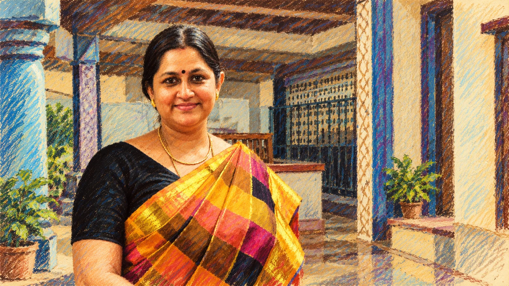

Editorial interlude · alternate visual language
Purple Tint: stories after dusk.
Purple Tint is a slower room inside the site — a darker, painterly interlude about memory, voice, atmosphere and the stories that reveal themselves after the noise of the day has faded.
A quieter register for stories that ask to be heard slowly.

About Purple Tint
What changes when the light changes?
Pastel daylight is for browsing. Purple Tint is for lingering.
Each edition pairs a voice clip, a photograph, a remembered book and a short reflection. It is a place for the quieter afterlife of reading — what remains after a story has ended, but before it has left you.
Some stories arrive in daylight. Others only reveal themselves at the edge of evening.Purple Tint · editorial interlude

First issue · “The Afterimage”
A voice stays after the sentence ends.
You close the book. The room has not changed, but the room feels altered. A character’s gesture is still there. A line of thought follows you into the kitchen. A voice you heard on a morning walk keeps speaking after the headphones come off.
That residue is the subject of Purple Tint — not the plot, not the biography, but what remains.